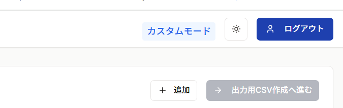

ログイン・ログアウト
ログイン方法
xFormlyのURL（https://xformly.example.com）にアクセスすると、自動的にログイン画面が表示されます。
メールアドレスとパスワードを入力し、ログインボタンをクリックします。
ログインに成功すると、メイン画面（Excel変換画面）が表示されます。
🔑 パスワードを忘れた場合
ステップ1: パスワード再設定ページへ移動
ログイン画面の 「パスワードをお忘れですか?」 リンクをクリックします。
ステップ2: メールアドレスを入力
- 登録済みの メールアドレス を入力
- 再設定メールを送信 ボタンをクリック
ステップ3: メールを確認
入力したメールアドレス宛に、パスワード再設定用のリンクが送信されます。
ステップ4: 新しいパスワードを設定
- メール内のリンクをクリック
- 新しいパスワード を入力
- 新しいパスワード（確認） に同じパスワードを再入力
- パスワードを変更 ボタンをクリック
ステップ5: 再設定完了
パスワードの変更が完了したら、新しいパスワードでログインできます。
🚪 ログアウト方法
ステップ1: ログアウトボタン
画面右上の ログアウトボタン をクリックします。

画面右上のログアウトボタン
💡 ヒント
セッションの有効期限
- ログイン状態は 1時間 有効です
- 一定時間操作がない場合、セキュリティのため自動的にログアウトされることがあります
- その場合は再度ログインしてください
❓ トラブルシューティング
ログインできない場合
ケース1: 「メールアドレスまたはパスワードが間違っています」と表示される
- メールアドレスに入力ミスがないか確認
- パスワードの大文字・小文字が正しいか確認
- Caps Lockがオンになっていないか確認
- パスワードを忘れた場合は、パスワード再設定をご利用ください
ケース2: パスワード再設定メールが届かない
- 迷惑メールフォルダを確認
- メールアドレスに入力ミスがないか確認
関連ページ
最終更新日: 2026年1月22日